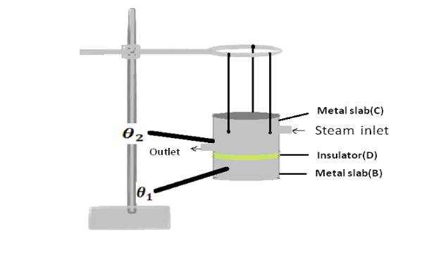
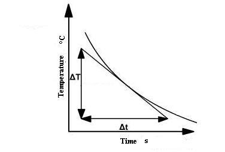

Lee's disc apparatus
The given bad conductor (D) is shaped with the diameter as that of the circular slab B. The bad
conductor is placed in between the steam chamber (C) and the disc (B), provided the bad conductor, steam
chamber and the slab should be of the same diameter. Holes are provided in the steam chamber (C) and the
disc (B) in which thermometers 1,2 are inserted to measure the temperatures.
The total arrangement is
hung over the stand as shown in Fig1.

Figure 1: Schematic of Lee’s apparatus. Steam generator is not shown
When a steady state is reached, let \(\theta_1\) and \(\theta_2\) be the temperatures of metallic disc C
and disc B. So, the
temperature difference between the two ends of bad conductor is
(\( \theta_1 - \theta_2 \)). When the
apparatus is in steady
state, the rate of heat conduction into metal disk B must be equal to the rate of heat loss due to
cooling from the bottom of the disk B. The heat loss can be measured by how fast disk was cooling from
steady temperature \(\theta_2\) .
The rate of heat loss = \(\frac{dQ}{dt}=Mc\frac{d\theta}{dt}\)
\(M\)- Mass of disc
\(C\) – specific heat capacity of disc
\(\frac{d\theta}{dt}\) - temperature loss per unit time in \(\theta_2\)
Note : \(\frac{d\theta}{dt}\) can be measured from cooling curve . It is slope of cooling curve of disc
B.

Hence, it is equal to thermal conductivity of any substance.
The rate of heat conducted through the bad conductor is,
$$\frac{dQ}{dt}=\frac{k×A×(\theta_1-(\theta_2)}{L}$$
\(K\) – coefficient of thermal conductivity
\(A\) – area of bad conductor
(\(\theta_1\)- \(\theta_2\)) - temperature difference in steady state
\(L\) – thickness of poor conductor
Equating both equations
Thermal conductivity = \(k = \frac{M×c×L×\frac{d\theta}{dt}}{A×(\theta_2-\theta_1)}\)